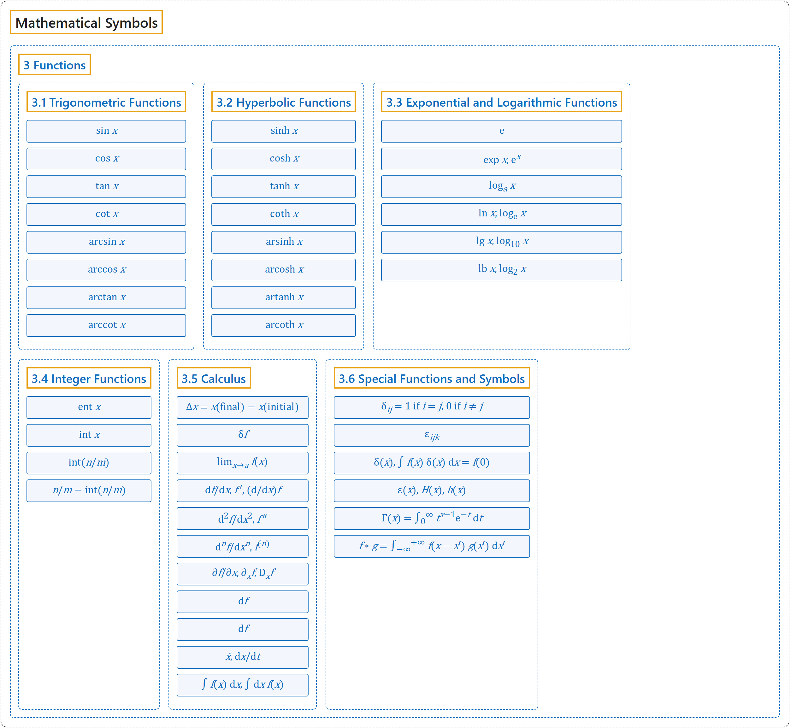

3 Functions
Classification

Glossary
| Symbol | Description | 中文翻译 | Source |
|---|---|---|---|
| Mathematical Symbols 数学符号 |
(No definition) | （无定义） | Cohen et al., 2007 |
| 3 Functions 函数 |
(No definition) | （无定义） | Cohen et al., 2007, section 4.2, p. 105 |
| 3.1 Trigonometric Functions 三角函数 |
(No definition) | （无定义） | Cohen et al., 2007, section 4.2, p. 105 |
| \(\sin x\) | "sine of \(x\)" | \(x\) 的正弦 | Cohen et al., 2007, section 4.2, p. 105 |
| \(\cos x\) | "cosine of \(x\)" | \(x\) 的余弦 | Cohen et al., 2007, section 4.2, p. 105 |
| \(\tan x\) | "tangent of \(x\)" | \(x\) 的正切 | Cohen et al., 2007, section 4.2, p. 105 |
| \(\cot x\) | "cotangent of \(x\)" | \(x\) 的余切 | Cohen et al., 2007, section 4.2, p. 105 |
| \(\arcsin x\) | "arc sine of \(x\)" Note 3: "These are the inverse of the parent function, i.e. \(\arcsin x\) is the operator inverse of \(\sin x\)." |
\(x\) 的反正弦 注 3：它们是原函数的反函数，即 \(\arcsin x\) 是 \(\sin x\) 的算子逆。 |
Cohen et al., 2007, section 4.2, p. 106 |
| \(\arccos x\) | "arc cosine of \(x\)" Note 3: "These are the inverse of the parent function, i.e. \(\arcsin x\) is the operator inverse of \(\sin x\)." |
\(x\) 的反余弦 注 3：它们是原函数的反函数，即 \(\arcsin x\) 是 \(\sin x\) 的算子逆。 |
Cohen et al., 2007, section 4.2, p. 106 |
| \(\arctan x\) | "arc tangent of \(x\)" Note 3: "These are the inverse of the parent function, i.e. \(\arcsin x\) is the operator inverse of \(\sin x\)." |
\(x\) 的反正切 注 3：它们是原函数的反函数，即 \(\arcsin x\) 是 \(\sin x\) 的算子逆。 |
Cohen et al., 2007, section 4.2, p. 106 |
| \(\operatorname{arccot} x\) | "arc cotangent of \(x\)" Note 3: "These are the inverse of the parent function, i.e. \(\arcsin x\) is the operator inverse of \(\sin x\)." |
\(x\) 的反余切 注 3：它们是原函数的反函数，即 \(\arcsin x\) 是 \(\sin x\) 的算子逆。 |
Cohen et al., 2007, section 4.2, p. 106 |
| 3.2 Hyperbolic Functions 双曲函数 |
(No definition) | （无定义） | Cohen et al., 2007, section 4.2, p. 105 |
| \(\sinh x\) | "hyperbolic sine of \(x\)" | \(x\) 的双曲正弦 | Cohen et al., 2007, section 4.2, p. 106 |
| \(\cosh x\) | "hyperbolic cosine of \(x\)" | \(x\) 的双曲余弦 | Cohen et al., 2007, section 4.2, p. 106 |
| \(\tanh x\) | "hyperbolic tangent of \(x\)" | \(x\) 的双曲正切 | Cohen et al., 2007, section 4.2, p. 106 |
| \(\coth x\) | "hyperbolic cotangent of \(x\)" | \(x\) 的双曲余切 | Cohen et al., 2007, section 4.2, p. 106 |
| \(\operatorname{arsinh} x\) | "area hyperbolic sine of \(x\)" Note 3: "These are the inverse of the parent function, i.e. \(\arcsin x\) is the operator inverse of \(\sin x\)." |
\(x\) 的反双曲正弦 注 3：它们是原函数的反函数，即 \(\arcsin x\) 是 \(\sin x\) 的算子逆。 |
Cohen et al., 2007, section 4.2, p. 106 |
| \(\operatorname{arcosh} x\) | "area hyperbolic cosine of \(x\)" Note 3: "These are the inverse of the parent function, i.e. \(\arcsin x\) is the operator inverse of \(\sin x\)." |
\(x\) 的反双曲余弦 注 3：它们是原函数的反函数，即 \(\arcsin x\) 是 \(\sin x\) 的算子逆。 |
Cohen et al., 2007, section 4.2, p. 106 |
| \(\operatorname{artanh} x\) | "area hyperbolic tangent of \(x\)" Note 3: "These are the inverse of the parent function, i.e. \(\arcsin x\) is the operator inverse of \(\sin x\)." |
\(x\) 的反双曲正切 注 3：它们是原函数的反函数，即 \(\arcsin x\) 是 \(\sin x\) 的算子逆。 |
Cohen et al., 2007, section 4.2, p. 106 |
| \(\operatorname{arcoth} x\) | "area hyperbolic cotangent of \(x\)" Note 3: "These are the inverse of the parent function, i.e. \(\arcsin x\) is the operator inverse of \(\sin x\)." |
\(x\) 的反双曲余切 注 3：它们是原函数的反函数，即 \(\arcsin x\) 是 \(\sin x\) 的算子逆。 |
Cohen et al., 2007, section 4.2, p. 106 |
| 3.3 Exponential and Logarithmic Functions 指数函数与对数函数 |
(No definition) | （无定义） | Cohen et al., 2007, section 4.2, p. 105 |
| \(\mathrm{e}\) | "base of natural logarithms" | 自然对数的底 | Cohen et al., 2007, section 4.2, p. 106 |
| \(\exp x,\ \mathrm{e}^x\) | "exponential of \(x\)" | \(x\) 的指数函数 | Cohen et al., 2007, section 4.2, p. 106 |
| \(\log_a x\) | "logarithm to the base \(a\) of \(x\)" Note 4: "For positive \(x\)." |
以 \(a\) 为底 \(x\) 的对数 注 4：\(x\) 为正数。 |
Cohen et al., 2007, section 4.2, p. 106 |
| \(\ln x,\ \log_{\mathrm{e}} x\) | "natural logarithm of \(x\)" Note 4: "For positive \(x\)." |
\(x\) 的自然对数 注 4：\(x\) 为正数。 |
Cohen et al., 2007, section 4.2, p. 106 |
| \(\lg x,\ \log_{10} x\) | "logarithm to the base 10 of \(x\)" Note 4: "For positive \(x\)." |
以 10 为底 \(x\) 的对数 注 4：\(x\) 为正数。 |
Cohen et al., 2007, section 4.2, p. 106 |
| \(\operatorname{lb} x,\ \log_2 x\) | "logarithm to the base 2 of \(x\)" Note 4: "For positive \(x\)." |
以 2 为底 \(x\) 的对数 注 4：\(x\) 为正数。 |
Cohen et al., 2007, section 4.2, p. 106 |
| 3.4 Integer Functions 取整函数 |
(No definition) | （无定义） | Cohen et al., 2007, section 4.2, p. 105 |
| \(\operatorname{ent} x\) | "greatest integer \(\leqslant x\)" | 不大于 \(x\) 的最大整数 | Cohen et al., 2007, section 4.2, p. 106 |
| \(\operatorname{int} x\) | "integer part of \(x\)" | \(x\) 的整数部分 | Cohen et al., 2007, section 4.2, p. 106 |
| \(\operatorname{int}(n/m)\) | "integer division" | 整数除法 | Cohen et al., 2007, section 4.2, p. 106 |
| \(n/m - \operatorname{int}(n/m)\) | "remainder after integer division" | 整数除法的余数 | Cohen et al., 2007, section 4.2, p. 106 |
| 3.5 Calculus 微积分 |
(No definition) | （无定义） | Cohen et al., 2007, section 4.2, p. 105 |
| \(\Delta x = x(\text{final}) - x(\text{initial})\) | "change in \(x\)" | \(x\) 的变化量 | Cohen et al., 2007, section 4.2, p. 106 |
| \(\delta f\) | "infinitesimal variation of \(f\)" | \(f\) 的无穷小变分 | Cohen et al., 2007, section 4.2, p. 106 |
| \(\lim_{x \to a} f(x)\) | "limit of \(f(x)\) as \(x\) tends to \(a\)" | \(x\) 趋于 \(a\) 时 \(f(x)\) 的极限 | Cohen et al., 2007, section 4.2, p. 106 |
| \(\mathrm{d}f/\mathrm{d}x,\ f',\ (\mathrm{d}/\mathrm{d}x)f\) | "1st derivative of \(f\)" | \(f\) 的一阶导数 | Cohen et al., 2007, section 4.2, p. 106 |
| \(\mathrm{d}^2 f/\mathrm{d}x^2,\ f''\) | "2nd derivative of \(f\)" | \(f\) 的二阶导数 | Cohen et al., 2007, section 4.2, p. 106 |
| \(\mathrm{d}^n f/\mathrm{d}x^n,\ f^{(n)}\) | "$n$th derivative of \(f\)" | \(f\) 的 \(n\) 阶导数 | Cohen et al., 2007, section 4.2, p. 106 |
| \(\partial f/\partial x,\ \partial_x f,\ D_x f\) | "partial derivative of \(f\)" | \(f\) 的偏导数 | Cohen et al., 2007, section 4.2, p. 106 |
| \(\mathrm{d}f\) | "total differential of \(f\)" | \(f\) 的全微分 | Cohen et al., 2007, section 4.2, p. 106 |
| \(\text{đ}f\) | "inexact differential of \(f\)" Note 5: "Notation used in thermodynamics, see Section 2.11, note 1, p. 56." |
\(f\) 的不恰当微分 注 5：热力学中使用的记法，见第 2.11 节注 1，第 56 页。 |
Cohen et al., 2007, section 4.2, p. 106 |
| \(\dot{x},\ \mathrm{d}x/\mathrm{d}t\) | "first derivative of \(x\) with respect to time" | \(x\) 对时间的一阶导数 | Cohen et al., 2007, section 4.2, p. 106 |
| \(\int f(x)\,\mathrm{d}x,\ \int \mathrm{d}x\, f(x)\) | "integral of \(f(x)\)" | \(f(x)\) 的积分 | Cohen et al., 2007, section 4.2, p. 106 |
| 3.6 Special Functions and Symbols 特殊函数与符号 |
(No definition) | （无定义） | Cohen et al., 2007, section 4.2, p. 105 |
| \(\delta_{ij} = \begin{cases} 1 & \text{if } i = j \\ 0 & \text{if } i \neq j \end{cases}\) | "Kronecker delta" | 克罗内克 δ | Cohen et al., 2007, section 4.2, p. 106 |
| \(\varepsilon_{ijk}\) | "Levi-Civita symbol" | 列维-奇维塔符号 | Cohen et al., 2007, section 4.2, p. 106 |
| \(\delta(x),\ \int f(x)\,\delta(x)\,\mathrm{d}x = f(0)\) | "Dirac delta function (distribution)" | 狄拉克 δ 函数（分布） | Cohen et al., 2007, section 4.2, p. 106 |
| \(\varepsilon(x),\ H(x),\ h(x)\) | "unit step function, Heaviside function" | 单位阶跃函数，赫维赛德函数 | Cohen et al., 2007, section 4.2, p. 107 |
| \(\Gamma(x) = \int_0^\infty t^{x-1}\mathrm{e}^{-t}\,\mathrm{d}t\) | "gamma function" | 伽马函数 | Cohen et al., 2007, section 4.2, p. 107 |
| \(f * g = \int_{-\infty}^{+\infty} f(x - x')\,g(x')\,\mathrm{d}x'\) | "convolution of functions \(f\) and \(g\)" | 函数 \(f\) 与 \(g\) 的卷积 | Cohen et al., 2007, section 4.2, p. 107 |
References
Cohen, E. R., Cvitaš, T., Frey, J. G., Holmström, B., Kuchitsu, K., Marquardt, R., Mills, I., Pavese, F., Quack, M., Stohner, J., Strauss, H. L., Takami, M., & Thor, A. J. (2007). Quantities, units and symbols in physical chemistry (3rd ed., 2nd printing 2012). IUPAC; RSC Publishing. https://iupac.org/wp-content/uploads/2019/05/IUPAC-GB3-2012-2ndPrinting-PDFsearchable.pdf